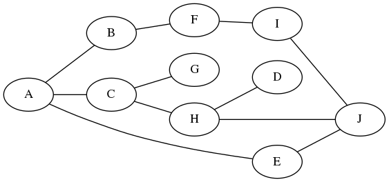
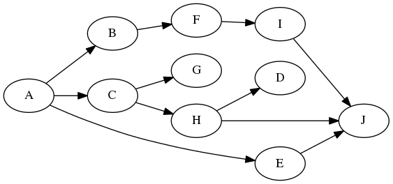
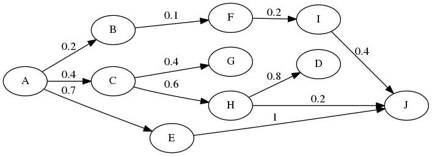
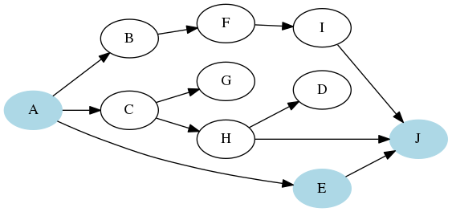
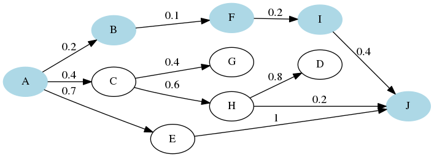

M1 Plurital
clement.plancq@ens.psl.eu
Cyclone Idai, the storm that has killed hundreds of people, submerged homes and battered cities in southeastern Africa, may prove to be one of the worst weather-related disasters ever in the Southern Hemisphere, a United Nations official said on Tuesday.
Comment faire pour extraire ce type d’information ?
| linguiste | fichier | repr. informatique | implémentation |
|---|---|---|---|
| schéma | .conll |
? | ? |
# sent_id = annodis.er_00461
# text = Le conseil municipal donne son accord pour cette procédure.
1 Le le DET _ Definite=Def|Gender=Masc|Number=Sing|PronType=Art 2 det _ _
2 conseil conseil NOUN _ Gender=Masc|Number=Sing 4 nsubj _ _
3 municipal municipal ADJ _ Gender=Masc|Number=Sing 2 amod _ _
4 donne donner VERB _ Mood=Ind|Number=Sing|Person=3|Tense=Pres|VerbForm=Fin 0 root _ _
5 son son DET _ Number=Sing|Poss=Yes 6 det _ _
6 accord accord NOUN _ Gender=Masc|Number=Sing 4 obj _ _
7 pour pour ADP _ _ 9 case _ _
8 cette ce DET _ Gender=Fem|Number=Sing|PronType=Dem 9 det _ _
9 procédure procédure NOUN _ Gender=Fem|Number=Sing 4 obl:mod _ SpaceAfter=No
10 . . PUNCT _ _ 4 punct _ _| linguiste | fichier | repr. informatique | implémentation |
|---|---|---|---|
| schéma | .conll |
graphe | ? |



 
| linguiste | fichier | repr. informatique | implémentation |
|---|---|---|---|
| schéma | .conll |
graphe | dict |
Travail sur le notebook : outils_corpus-4.ipynb